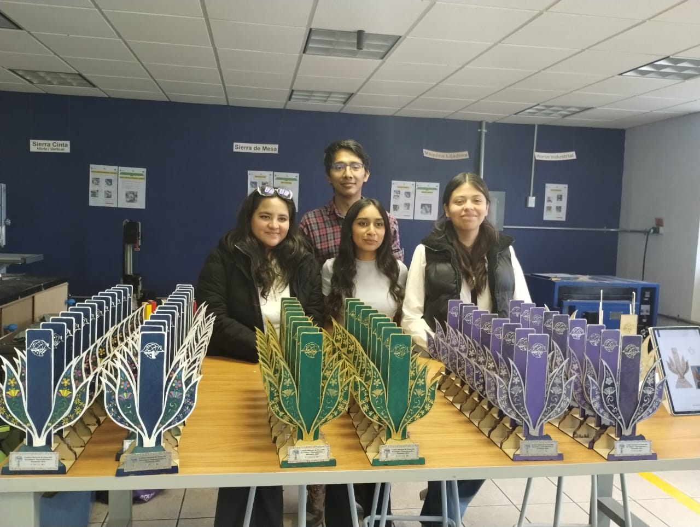
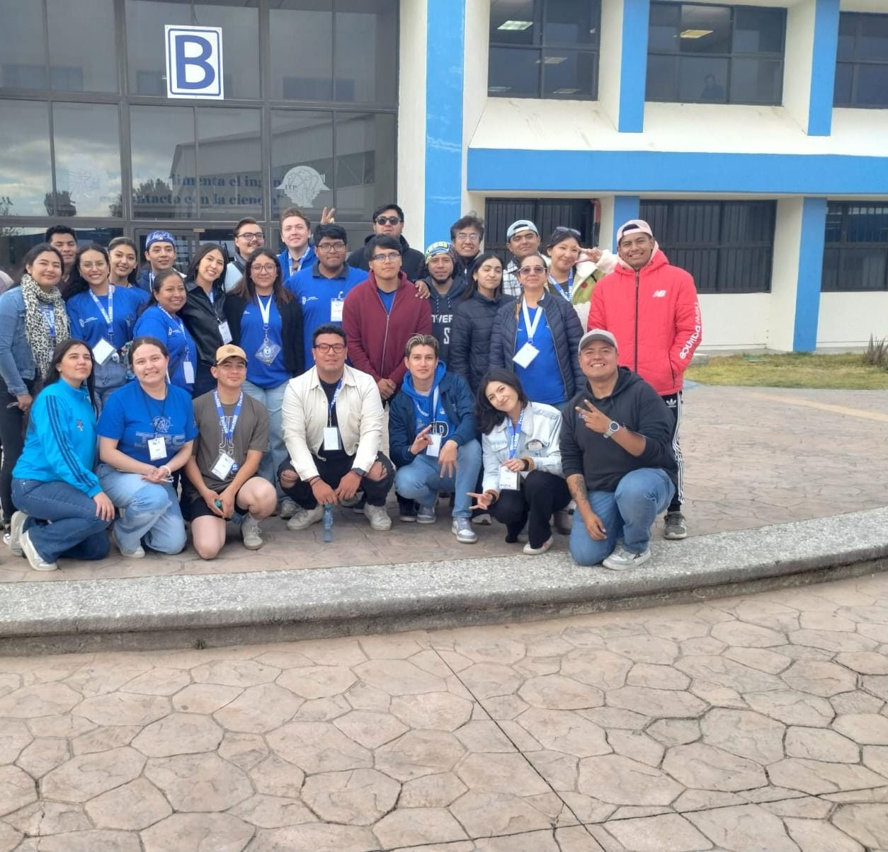
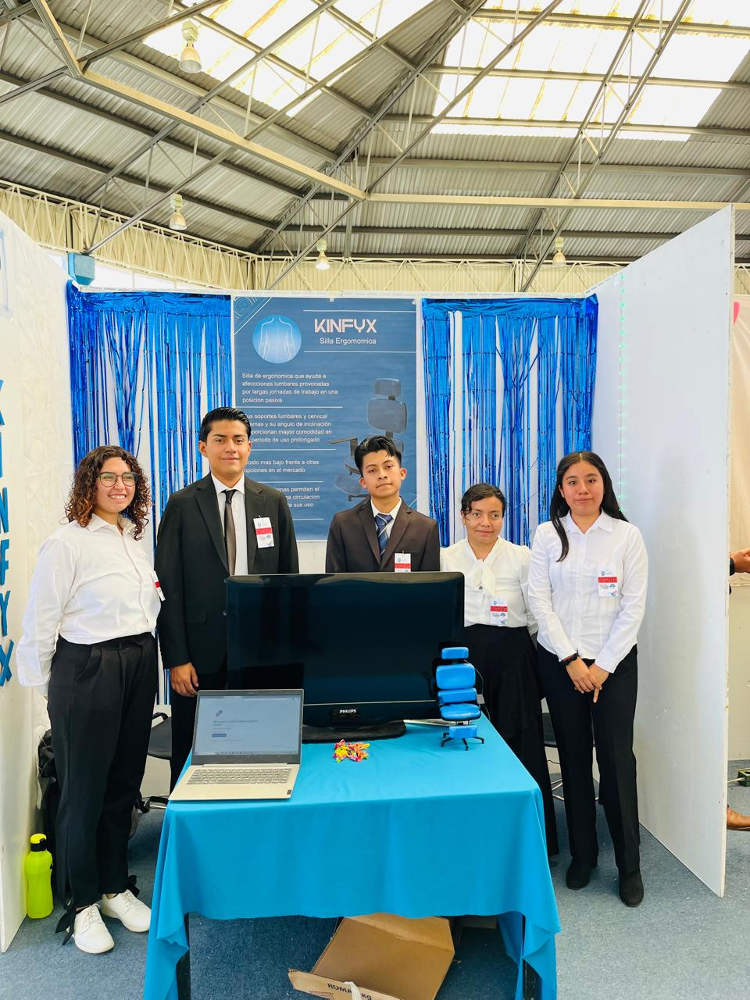
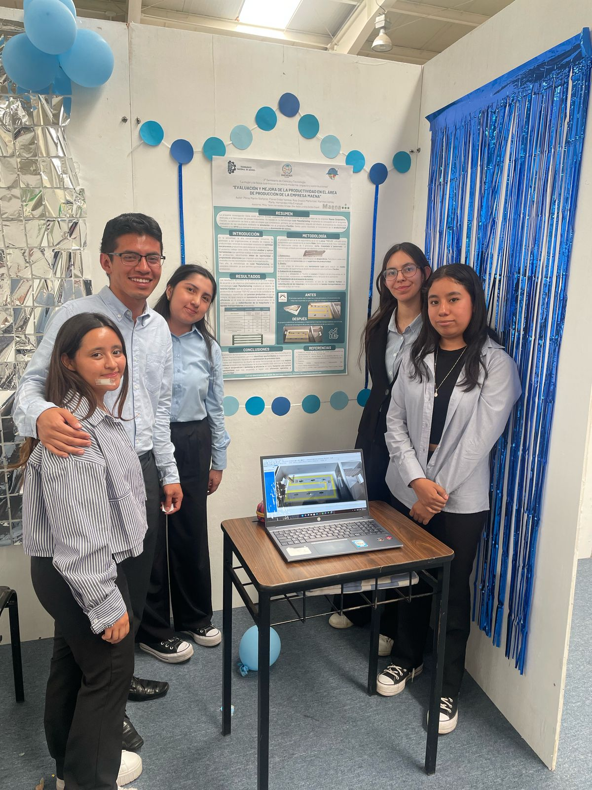

InnovaTec
Este es un espacio donde estudiantes y docentes desarrollan y comparten ideas innovadoras y emprendedoras. Su objetivo es impulsar propuestas que generen soluciones a problemáticas reales y contribuyan al desarrollo de la sociedad.
Este es un espacio donde estudiantes y docentes desarrollan y comparten ideas innovadoras y emprendedoras. Su objetivo es impulsar propuestas que generen soluciones a problemáticas reales y contribuyan al desarrollo de la sociedad.

La formación profesional no solo se desarrolla dentro del salón de clases. Las actividades adicionales permiten adquirir nuevas habilidades, fortalecer el trabajo en equipo, desarrollar liderazgo y conocer el funcionamiento real de empresas e instituciones. Además, representan una excelente oportunidad para ampliar tu experiencia académica y enriquecer tu currículum profesional.



